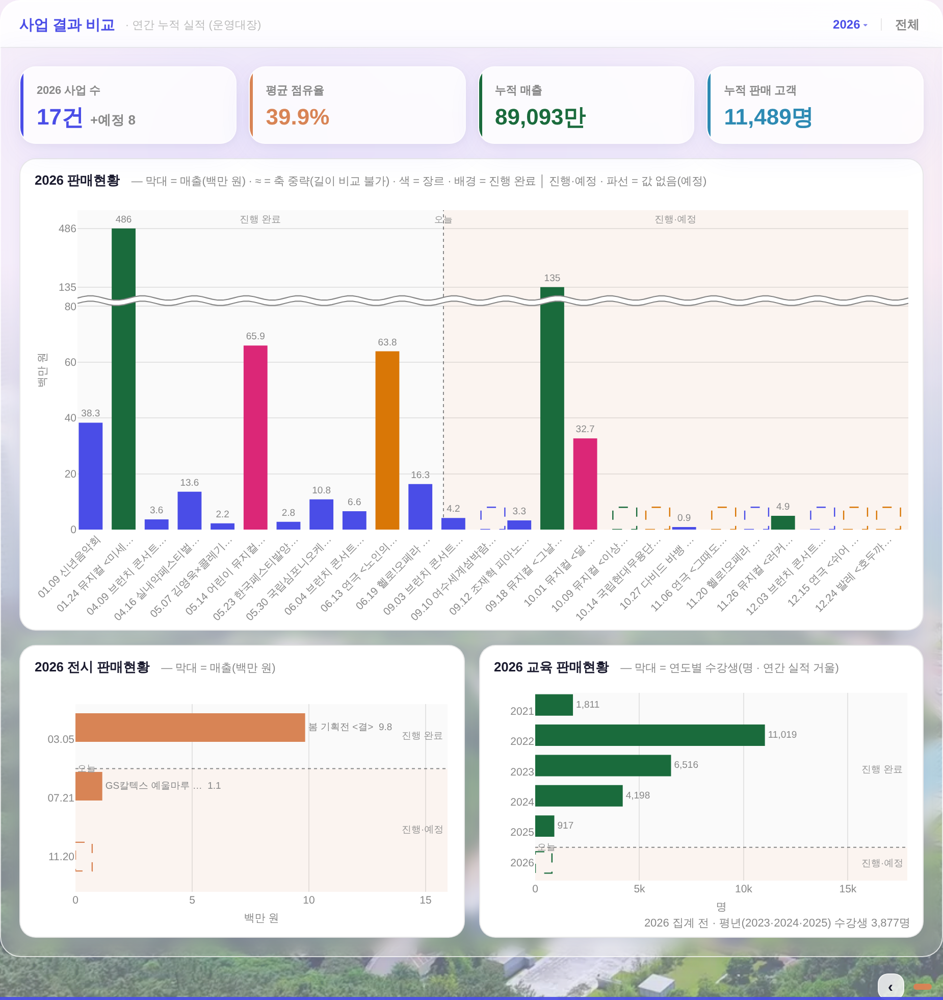
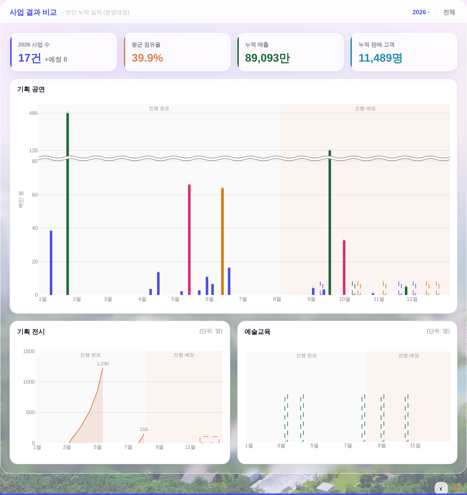

사업 결과 비교 — 기획 공연 · 기획 전시 · 예술교육 (전후)
260804 운영자 지시 이행 실측. 데이터 = 커밋된 260803 스냅샷(공연) + 형태 재현 목(전시 누적·교육 일정) — 전·후 같은 데이터로 렌더(실API·PII 미접촉).
① 제목 = 기획 공연·기획 전시·예술교육 ② 회색 설명문 삭제(전시·교육 = 우상단 「(단위: 명)」만) ③ 대각선 이름축 → 1월~12월 실날짜 축(몰림 보존 · 게이지 막대) ④ 「오늘」 파선 삭제 = 반투명 음영만 ⑤ 전시 = 세로 누적범위 음영(꼭대기 = 최종 판매 인원) ⑥ 교육 = 당해 연도 월별 일정 게이지.
보드 전체 (1920×1080)
전 — 판매현황 3카드(대각선 이름축 · 오늘 파선 · 전시 가로막대 · 교육 여러 해 겹침)
후 — 기획 공연·기획 전시·예술교육(1월~12월 월축 · 음영 구획 · 누적범위 · 일정 게이지)
기획 공연 — 대각선 이름축 → 1월~12월 게이지 막대
비어 있는 달(3월·7~8월)은 비어 보이고, 몰린 달(1월·9~10월)은 몰린 대로 붙는다(같은 날 복수 사업만 막대폭×1.18 최소 간격). 「오늘」 파선·라벨 제거 — 진행 완료(회색)│진행·예정(피치) 반투명 음영이 경계를 말한다. 축 중략(≈)·장르색·파선(값 없음)은 종전 문법 그대로.
기획 전시 · 예술교육 — 가로 막대 → 세로 월축
전시 = 시작일 0 → 일일 누계 실측점 → 종료일 최종 인원으로 차오르는 누적범위 음영(전시끼리 중첩 허용 · 진행중은 지금까지 누계가 꼭대기 · 예정 = 파선 자리). 교육 = 당해 연도만, 프로그램 시트(예술교육)의 그 달 자리에 게이지 세로선 — 프로그램 단위 수강생 원천이 없어 「값 없음」 파선 문법(수치 창작 0). 두 카드 우상단 = (단위: 명).
데이터 노트
· 교육 게이지가 파선(빈 윤곽)인 이유 = 프로그램 단위 수강생 원천이 시트에 없다(있는 건 연간 실적 거울 총계뿐). 일정은 실값(프로그램 시트), 높이는 상징(반높이 고정) — 툴팁이 「수강생 집계 전」을 명시한다.
· 전시 곡선의 중간 경사는 전시일일 누계 실측점 연결선(일일이 없는 전시는 시작 0 → 끝 최종의 직선 램프). 꼭대기 숫자 = 최종(종료)/현재(진행) 누적 판매 인원.
· 게이트 = check_design ✓(raw hex 1578/1578 · 신규 색 0) · npm run check ✓ · smoke:layout ✓(이젤·흰 라인 계약 Δ0) · 1366×768 fit 경로 실측 ✓.